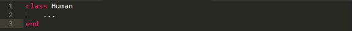
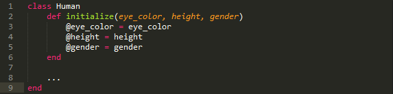
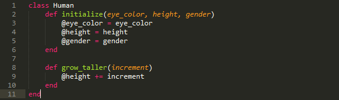

A Ruby class is an invaluable tool that can provide great aid as well as save you a lot of time and effort when writing a large piece of code. It could be thought of as an architectural blueprint that you need to create once in order to be able to use to build many buildings in the future.

What any class essentially does, is that it takes a group of unique methods (actions) and parameteres (characteristics) and stores them so that they are available for implementation further down the line by a family of objects (that's what a class really is) that will be created throughout the rest of the program. The great thing about classes is that you don't even need to know exactly how many of these objects you're going to end up with, because as long as they all are related to each other and serve the same purpose, they could be unified under the same class.
Let me try to draw a parallel to programming classes with a real-life example. There are many potential things I could bring up here but it seems to me that a person, an actual human being, would be the most colorful and animated of them all. So just imagine that "Human" is a class that we want to create. It's very simple to create a class in Ruby. All you need to do is this:
However, this line of code by itself would be pretty useless as we want to create a class with some kind of goal in mind. Specifically, we would want all of the instances of our "Human" class to have the same type of characteristics. While each object would have its own unique characteristic, the term or the name of that charateristic is shared by all. Just think of real people: we all have things called "eye color", "height", "gender", etc. If you were creating a real-life simulator game (like "The Sims", for example), it would very annoying for you to type out the same variable names, like the ones mentioned above time after time because you would need to create a very large amount of "Human" objects. That's where class would come into play:
Check out the method #initialize! It's not there to define any particular action (which I will talk about in a minute) that could be performed by objects of "Human" class, per se, but it is an essential method that you need to have virtually any time you're creating a new class. Pay attention to lines 3 - 5 in the code above: those variables with the "@" sign before them are called instance variables. The reason why we are creating those and setting their values equal to the parameters of the #initialize method with the corresponding names, is so that they can be recognized and used by the instance methods that will be defined after the #initialize method. You could think of the parameter "eye_color" as a part of the object's genotype (its genetic makeup) and the instance variable "@eye_color" as its phenotype (its observable traits). Just like we cannot see the genes of a person, the instance methods won't be able to see arguments passed to each new instance of "Human" class. But, on the other hand, a physical trait created by the corresponding genes is visible to our eye; so are instance variables visible to instance methods defined within a class.
So what are those instance methods for anyway? Well, they represent actions that can be performed by each object that belongs to the class in question. In our case we can think of verbs like "run", "eat", "sleep" and so on - that's something we all do, right? Same thing with the "Human" class - all of its objects will be available to call these methods upon them and it's up to us to specify what those methods will do. This is where it becomes fun! Obviously you couldn't grow taller simply by wishing to do so in real life (what a shame, huh?). But in Ruby nothing is impossible. Here we define the #grow_taller method for our "Human" class:
And now watch me gain 5 inches of height:
Pretty cool, huh! Hopefully, now you have at least a very basic idea of what Ruby classes are, what purpose they serve and how to use them. If the example I used doesn't make all of these things clear to you, try to think of a class as a machine that makes passports. An instance of passport will be issued to each "citizen" object. And every passport will have an identical format and field names that, in turn, will contain different data that desribe each passport holder as a unique individual. Good luck using classes in your future programs!